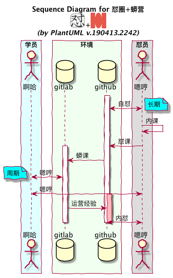

自怼圈109w
DebugUself
190518 2042
又

22CC
重逢 29 年前的大妈
- 进展: s0 ~ 68<-86<-107
- 协力: Xiaoshizi1024+gzMichael
- 节奏: 希望 420字/每人天
- 连载: du4proto/textbook at 22cc
寸
DUW
周刊
#652
自动化发布
全人工
Hugo
zeo 尝试
markdoc
无头信息,净 md 发布
MkDocs
现代文档网站生成器
pages
静态网站发布服务
- github-pages
- master
- /docs
- gh-pages
- gitlab-pages
automate
什么是自动化?
一键完成
fabric -> Invoke
定期
crontab
触发
trigger
感应
web-hook
传递触发
hook->trigger
HookSrv.
bottle
MVP
ngrok
WSGI srv.
Gunicorn
进程监管
Supervisor
web srv.
Nginx
IaaS
ECS.aliyun
SCM
Mercurial
hg 远程私有仓库
ASCII-map
心
PHP
2000
ASP->
NucleusCMS
2002
blog
CZUG
2003~07
Plone
啄木鸟
2004~2009
- MoinMoin 1.4.*
- -> Zim
- -> -> Notational Velocity
- -> -> -> ScrapBook
CPUG
2005~
SHLUG
BPUG
2006~
CPUG
ZPUG
2007~2010
BPUG
ECUG
2007 ~
- Erlang
- erlbattle
- ..

TechParty.org
珠三角技术沙龙 2009 ~
ZPUG 太小
PyCon Asia Pacific
2010/出国
2011
PyConChina
不忿
PyCon中国
2012 ~
自己的 conference
GDG 珠海
2013 ~
2014
开智青年群
双学位/高知
OMOOC.py
2015~18
有偿
自怼圈
170401 ~
知识付费
101.camp
181225 ~
服务大众
自筑社群
(￣▽￣)

slides
是也乎
- 190518 发布
- 190517 嗯哼
- 190516 预约
嗯哼
AoC
CoP
Community of Practise
实践型社区
GNU
GNU Not Unix
Self-teching
自学
使命
愿景
培育
可催生
自学习型组织
的
文化氛围DU keep growing environment culture which promoting organization learning;-)
故事
联合/传播
催生
可促生
靠谱的人
的
组织;-)DU keeps evolving organizations which promoting people be DU ;-)
常设
文化
气质成分
有种
公有
服务
共同节奏
有料
专属
乐趣
心水投影
有趣
环境
github -> 用之, 弗学
- Issue -> 发问/起/记录/…
- Wiki -> 交付/沉淀/复用/..
- repo. -> 追踪/协同/原稿/…
- Slack -> 日常嗯哼/提醒
- ggroups -> 异步嗯哼/提醒/发布/通知
- 微信群 -> …
节奏
rhythm


蟒怼
DebugUself101camp


追述
- who?
- where?
- why?
duw_pub
之前
人工:
DUW -> .md
-> pdf
release 附件 <-
列表邮件 <-duw_pub
后来 @zoe
人工:
DUW -> .md
复制 -> duw
半自动 -> 追加头信息
编译 <- hugo
github-pages <-
duw.zoomquiet.io专属作品
原创/激发的3有作品
- aTL4dama
- YHDutySchedule 排班小程序
- music ~ Zoe 音乐探索
- ? Kaggle 刷题帮
自修
谁主张, 谁执行
「 Clover: https://du.101.camp/
"怼星球"的链接还是之前的...
点击仍然跳转到当前页 」

rhythm
节奏
习惯
替代意志
知行合一
8+周
第3周…
daily
嗯哼
- 固定节奏
- 解决问题
- 认真思考
- 持续输出
daily
持续输出
- Issue
- Slack
- 周刊
- …
weekly
嗯哼
周六
2042 zoom.us
- 破冰
- 单口/内课/…
- 当周简报
- 怼务
周一
2042 周刊发布
- 轮值
- 主编 -> DAMA
- 责编 -> 全体
- 撰稿 -> 日常 #634
常设作品
入怼必须参与的作品任务
- 时间账单 #641
- 怼周刊投稿
- 怼周会纪要
怼周刊
怼杂记
团体 blogging
醉点
明明能, 就不能
视而不见
(￣▽￣)
MVP
公有作品
#643
义务/轮值的日常作品/任务
- 怼周刊编辑/发布
- 怼周会主持
- 怼圈招新/文宣
- 怼圈运营工具箱
pub #652
周刊自动发布器
duw_pub
#652 周刊自动发布器
@Vwan 发起
duw_pub
现在
人工 -> DUW -> .md
自动 -> 定期
-> 同步 DUW
-> 复制 duw_pub
-> 编译 Mkdocs
仓库 duw <- site
github-pages <-
du.101.camp/duwduw_pub
TODO
duw_pub
优化
- web hook -> 感知仓库变化
- 多渠道内容采编
- 配合人工编辑
st #651
活性统计器
#646
怼力通证
- du.101.camp/pow/zoomquiet
- 101.camp/1py/pow/zoomquiet
PoW
工作证明
- git 仓库分析
- -> SHA
- –> commit-comments
- …
专属作品
原创/激发的3有作品
怼地图#646
du.101.camp/map
? 图谱索引
怼?
又寸,*心…
sociallearnlab.org
DevRel